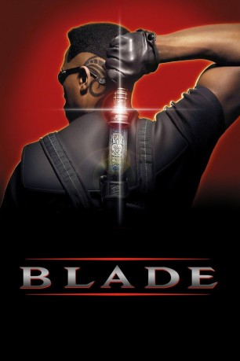
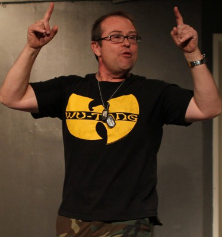
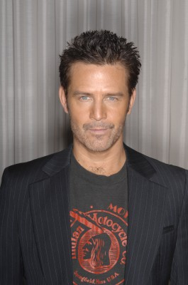
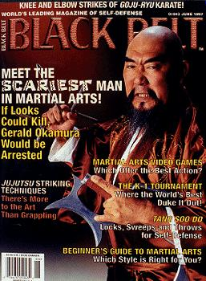

#1050 Blade 1
 
 IMDB-Wertung: 7.1 / 10
IMDB-Wertung: 7.1 / 10  Metascore: 45
Metascore: 45 
Der ultimative Vampirjäger, Blade, hat die Kräfte eines Unsterblichen, die Seele eines Menschen und das Herz eines Helden. Es ist seine Aufgabe, mit Hilfe seiner Stärken und seiner Waffen die menschliche Rasse vor der Auslöschung zu bewahren. Denn ihnen wurde vom Anführer der blutdurstigen Vampire, Deacon Frost, der Krieg erklärt. Frost glaubt, durch einen langen vergessenen Fluch die Erde buchstäblich in die Hölle verwandeln zu können. Blade und sein Mentor Whistler haben alle Hände voll zu tun, um Frost bei seinem Vorhaben aufzuhalten.
Jahr: 1998
Dauer: 120 Minuten
FSK: 18
Land: USA Studio: New Line CinemaTonspuren:
Untertitel:
Auflösung: 1080p (1920x800) Größe: 8949 MB
Genre: Action, Horror
Regisseur: Stephen Norrington
Drehbuch: David S. Goyer
Soundtrack: Mark Isham
Darsteller:
 Wesley Snipes als Blade
Wesley Snipes als Blade Stephen Dorff als Deacon Frost
Stephen Dorff als Deacon Frost Kris Kristofferson als Whistler
Kris Kristofferson als Whistler- N'Bushe Wright als Karen
 Donal Logue als Quinn
Donal Logue als Quinn Udo Kier als Dragonetti
Udo Kier als Dragonetti Arly Jover als Mercury
Arly Jover als Mercury- Traci Lords als Racquel
 Tim Guinee als Curtis Webb
Tim Guinee als Curtis Webb Sanaa Lathan als Vanessa
Sanaa Lathan als Vanessa-  Eric Edwards als Pearl
- Shannon Lee als Resident
- Kenny Johnson als Heatseeking Dennis
- Clint Curtis als Creepy Morgue Guy
- Judson Scott als Pallantine
- Andray Johnson als Paramedic
- Stephen R. Peluso als Paramedic
 John Enos III als Blood Club Bouncer
John Enos III als Blood Club Bouncer- D.V. DeVincentis als Vampire Underling
 Matt Schulze als Crease
Matt Schulze als Crease Lennox Brown als Pleading Goon
Lennox Brown als Pleading Goon- Jenya Lano als Russian Woman
- Levan Uchaneishvili als Russian Vampire
- Ryan Glorioso als Blood Bath Vampire , uncredited
 Al Goto als Henchman , uncredited
Al Goto als Henchman , uncredited- Steven Ito als Henchman , uncredited
-  Ted King als Vampire at rave , uncredited
- Will Leong als Henchman , uncredited
- David Matthiessen als Vampire , uncredited
-  Gerald Okamura als Vampire , uncredited
- Frankie Ray als Vampire Lord , uncredited
 Simon Rhee als Henchman , uncredited
Simon Rhee als Henchman , uncredited- Michael Stumpf als Sword Thrower , uncredited
- Kevin Patrick Walls als Krieger
- Donna Wong als Nurse
- Carmen Thomas als Senior Resident
- Sidney S. Liufau als Japanese Doorman
- Keith Leon Williams als Kam
- Marcus Aurelius als Pragmatic Policeman
- Eboni Adams als Martial Arts Kid
- Lyle Conway als Reichardt
- Freeman White als Menacing Stud
- Marcus Salgado als Frost's Goon
- Esau McKnight Jr. als Frost's Goon
- Erl Van Douglas als Von Esper
- Yvette Ocampo als Party Girl
- Irena Stepic als Slavic Vampire Lord
- Nikki DiSanto als Vampire Victim , uncredited
 Jeff Imada als Henchman , uncredited
Jeff Imada als Henchman , uncredited- Elliott James als Blood Club , uncredited
Datei: X:\FSK18-Collections\Blade\Blade 1 (1998, FSK18, 1920x800).mkv seit 15.05.2015
Festplatte: FSK18
 Alle Filme aus Gruppe 'FSK18-Collections\Blade'
Alle Filme aus Gruppe 'FSK18-Collections\Blade'